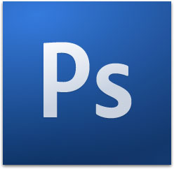

Las aplicaciones, a las que también se suele llamar utilidades o simplemente programas, constituyen el grueso del software informático.
El Ordenador
4.3. Programas, aplicaciones y utilidades
Actividad
Se entiende por aplicación cualquier software que funcionando sobre un sistema operativo con el que es compatible realiza una tarea específica.
Aunque no es una regla definida suele reservarse el término programa para referirse al tipo de software en forma genérica. Así hablaríamos de un procesador de textos como un tipo de programa. Por su parte el termino aplicación muchas veces se reserva para referirnos a un software específico, por ejemplo, hablamos de la aplicación Write como un procesador de textos concreto. Por último la palabra utilidad se asocia en muchas ocasiones a los software que cumplen una función de mantenimiento o auxiliar para el funcionamiento del equipo (antivirus, compresores, herramientas de mantenimiento...). Sin embargo volvemos a indicar que esto es más una costumbre que una regla fija.
En la definición de aplicación aparece una palabra que tal vez te haya sonado estraña, es el término "compatible". Esto quiere decir que no cualquier aplicación funcionará con cualquier sistema operativo. Así por ejemplo el procesador de textos de la empresa Microsoft funcionará correctamente con el sistema operativo Windows, con el que es compatible, sin embargo será completamente inutil si el sistema operativo que estamos utilizando es una distribución Linux o Mac.
Normlamente antes de poder utilizar una apicación será preciso "instalarla" en nuestro ordenador. El proceso de instalación normalmente estará gobernado por un subprograma propio, llamdado instalador, presente en el programa que queremos instalar y que se encargará de copiar y modificar los archivos necesarios en nuestro ordenador.
Dentro de las aplicaciones y utilidades se pueden distinguir distintas versiones según su funcionalidad:
- Libres o freeware: Son programas de libre distribución, gratuitos y no sujetos a ningún tipo de limitación legal para su uso. Dentro de ellos y tal como hemos dicho al hablar de los sistemas operativos destacan todas las aplicaciones Linux, libres y de código abierto.
- Shareware: tienen una funcionalidad limitada, es decir, se ejecutarán en nuestro ordenador parcialmente. Así, puede que no tenga activas todas las opciones de menú o que tenga un período de vigencia de un número de días concretos, tras lo cual dejará de funcionar.
- Demo: software comercial destinado a mostrar al posible usuario sus características. Al igual que los programas shareware, tienen limitadas las opciones de ejecución o el período de validez.
- Comerciales: son aquellas que se encuentran sujetas a su compra para poder usarlas en el ordenador. Normalmente tras su adquisición debe procederse al registro del producto.
- Beta: versiones previas de un programa, destinado a su comprobación de funcionamiento real en ordenadores personales antes de su lanzamiento comercial.
A continuación vamos a citar algunos de los tipos de aplicaciones más habituales en la actualidad. Sin embargo, hay que indicar que la variedad de software, al igual que la de las funciones para las que se puede usar un ordenador personal, es prácticamente infinita por lo que esta lista no deja de ser una orientación.
- Procesadores de texto:
Programas diseñados para crear y editat docuemtos de texto. En principio se podría pensar en ellos como programas que permiten utilizar el ordenador como una máquina de escribir. Sin embargo la infinidad de opciones y posibilidades que ofrecen estos progamas nos permiten formas de trabajo y resultas que dificilmente podríamos obtener con las máquinas tradiconales. Las posibilidades son casi ilimitadas, entre ellas podemos indicar la facilidad con que se pueden modificar los tamaños, tamaños y colores de las fuentes (letras), espacio entre párrafos, insertar imágenes, tablas, gráficos... o simplemente la posibilidad de modificar el contenido o el estilo de un documento ya terminado.
El procesador de textos más utilizado en la actualidad es el programa Word, de la empresa Microsost, incluido dentro del paquete ofimático (conjunto de aplicaciones utilizada para crear, coleccionar, almacenar, manipular y transmitir digitalmente la información necesaria en una oficina para realizar tareas y lograr objetivos básicos). Entre las opciones libres cabe destacar el programa Write, incluido en el paquete OpenOffice de la empresa Oracle, con las ventajas de ser un programa gratuito que ofrece la mayor parte de las opciones del anterior.
- Bases de datos
Aplicaciones destinadas al almacenamiento y gestión de grandes cantidades de datos. Suelen estructurarse en tablas para el almacenamiento de datos y presentaciones para la información en pantalla e impresión en papel. Destacan por la posibilidad de realización de consultas complejas. Al igual que en el caso anterior tenemos el paquete Office la aplicación Access dominado el mercado, frente a ella tenemos la opción libre de OpenOffice que recibe el nombre de Base.
- Hojas de cálculo
Estos programas tienen como objetivo la realización de cálculos y funciones complejas y la elaboración de gráficos muy variados a partir de los datos utilizados o resultantes de esos cálculos. Una característica común de todos estos programas es la organización de la información en hojas de datos, divididas en celdas por medio de filas y columnas. Entre las posibilidades que nos ofrecen estos programas tenemos la capacidad de recalcular automáticamente los resultados variando algunos parámetros de partida. También es posible perseguir objetivos, averiguar cuál ha de ser el valor de un determinado parámetro para lograr el objetivo deseado. Las hojas de cálculo suelen estar integradas dentro de un paquete ofimático con los programas anteriores. Microsoft destaca de nuevo con su programa Excel, cuyo equivalente en OpenOffice sería Calc.
- Presentaciones
Junto con los tre tipos anteriores, este tipo de programas cierra el cuarteto de programas básicos de cualquier paquete ofimático eficiente. Estas aplicaciones se utilizan en la edición de documentos interactivos destinados a la realización de presentaciones públicas. Destacan por su sencillez de uso y la vistosidad de los resultados finales. Permiten la edición de texto, inclusión de imágenes, animaciones, sonidos, etc. El programa de Microsoft se llama Power Point y el de Oracle Impress.
| Imagen 38. komplettie. Copyright. |
Imagen 39. thepinkc. Copyright |
Su origen está en la navegación a través de la web. Sin embargo, su utilización se ha ido extendiendo al integrar la navegación en la red y la navegación de la estructura de archivos del propio ordenador. Incialmente solamente permitían la presentación de documentos creados en html, sin embargo poco a poco se han ido incorporando otro tipo de lenguajes que proporcionan dinamismo y vistosidad a las páginas. En algunos casos, por ejemplo para poder incorporar presentaciones en lenguaje flash, es necesario incorporar a los navegadores algún pequeño plugin complementario. Los dos grandes navegadores del mercado son Mozilla Firefox e Interntet Explorer.
- Correo electrónico
El correo electrónico es uno de los servicios más conocidos y utilizados que ofrece Internet. Los programas de correo electrónico sirven para gestionar el envío y recepción de los mensajes. Además, incorporan libretas de direcciones electrónicas y permiten enviar ficheros completos desde nuestro equipo. El correo electrónico propiamente dicho incorpora acceso a grupos de noticias y otros servicios de Internet. Entre los programas de correo electrónico más utilizados están Thunderbird de Mozilla y Outlook de microsoft.
-
Edición de imágenes Imagen 42. Adobe. Copyright
La edición de imagen digital consiste en el tratamiento, modificación y adecuación de gráficos y fotografías. Las opciones que proporcionan los programas de tratamiento de imágenes son enormes y van desde el retoque a la inserción de filtros, utilización de diferentes formatos, selecciones complejas, etc. Entre todos estos programas la referencia por la que se guían todos los demás el la aplicación Photoshop de la empresa Adobe. Aunque más sencillo también ofrecen muchas posibilidades progamas como Photo-Paint y el Paint Shop Pro, ambos de la empresa Corel. Dentro del software libre la aplicación que mejores reslutados ofrece es GIMP desarrollado por The GIMP Team.
- Reproductores musicales
La extensión que está experimentando la difusión de contenidos a través de Internet ha provocado la aparición y uso generalizado de reproductores musicales cada vez más sofisticados. Este tipo de programas reproducen todos los tipos de formato de audio: mp3, wav, xm, mod, flac,... Sería practicamente imposible citar un reproductor que destaque sobre el resto ya que cada uno de ellos ofrecerá posibilidades diferentes que se adapatarán al usuario mejor o peor en función de sus exigencias o necesidades. Podríamos señalar al WinAmp Pro entre los programas de pago, sin embargo la cantidad y calidad de los programas gratuitos disponibles hace que lo normal sea decantarse por ellos.
Al igual que ocurre con la música, los ordenadores personales se están utilizando, cada vez más, para la visualización de vídeo. Al igual que en el caso del sonido, existen diferentes tipos de formatos y soportes. Programas habituales en la visualización de vídeo son Real Player, Power DivX, VLC, Gnome, SMPlayer, WinDVD o Camtasia. Los propios sistemas operativos incorporan desde hace tiempo este tipo de software en su configuración como en el caso de Windows y su Windows Media Player. Aunque estos programas nacieron pensando en la reproducción de video, cada vez es más habitual que incorporen las características necesarias para actuar como reproductores de audio, dando lugar a los Media Center.
-
Edición de videoImagen 45. Adobe. Copyright
La generalización del uso de cámaras de vídeo digitales, ha hecho común el volcado de las imágenes en vídeo en los discos duros de los ordenadores y con ello la popularización del uso de los programas de edición de video. Estos programas permiten a cualquier usuario doméstico crear películas con un nivel de calidad que sería inimaginable hace unos pocos años. Debido a la cantidad de información que manejan, estos programas están entre los que tienen unos requerimientos de hardware más importantes. Dentro de estos programas destacan el Premiere de la empresa Adobe y el Pinnacle Studio de Avid.
- Antivirus
Uno de los grandes problemas de los ordenadores personales es el de los virus. Cuando en informática hablamos de un virus nos referimos a un programa que se instala en nuestro ordenador sin que nosotros seamos consciente y que puede llegar a dañar irreparablemente el equipo y todo su contenido. Los antivirus tratan de localizar y eliminar estos virus. La evolución de los virus, sus distintas variantes (gusanos, troyanos...) y sus mutaciones hacen que la actualización de los antivirus tenga que ser continua. Por eso, los antivirus se suelen instalar de forma residente (es decir, se inician automáticamente cuando arrancamos nuestro ordenador) y deben ser actualizados de manera periódica. Algunos de los antivirus más usados son Panda, McAfee o Norton. También existen programas antivirus gratuitos, entre ellos destaca Avast que en los últimos años está adquiriendo una gran popularidad.
- Compresores
La función de los compresores consiste en reducir el tamaño de los ficheros al mínimo posible a fin de que su envío por correo electrónico resulte lo más ágil posible. También permite transportar los archivos en disquetes u otros soportes de baja capacidad de almacenamiento. Los formatos de compresión son varios (arj, zip...), aunque el más extendido es rar. El programa que lo ejecuta es Winrar. Otros compresores son Winzip y Filzip.
|
|
|
| Imagen 46. avast. Copyright | Imgen 47. rarlab. Copyright |
Objetivos
Realiza un breve informe con las aplicaciones instaladas en tu ordenador clasificándolas por su función: exploradores, correo electrónico, procesadores de texto, bases de datos, programas para el tratamiento de imágenes, etc.